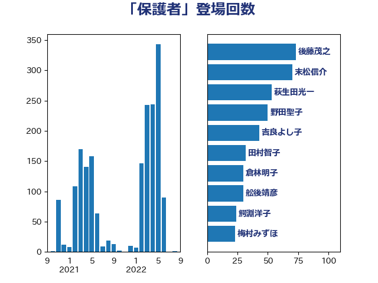

単語「保護者」

| 後藤茂之 | 自由民主党 | 73 回 |
| 末松信介 | 自由民主党 | 70 回 |
| 萩生田光一 | 自由民主党 | 53 回 |
| 野田聖子 | 自由民主党 | 50 回 |
| 吉良よし子 | 日本共産党 | 43 回 |
| 田村智子 | 日本共産党 | 32 回 |
| 倉林明子 | 日本共産党 | 30 回 |
| 舩後靖彦 | れいわ新選組 | 30 回 |
| 鰐淵洋子 | 公明党 | 24 回 |
| 梅村みずほ | 日本維新の会 | 23 回 |
| 打越さく良 | 立憲民主党 | 22 回 |
| 堀場幸子 | 日本維新の会 | 20 回 |
| 塩川鉄也 | 日本共産党 | 18 回 |
| 山添拓 | 日本共産党 | 18 回 |
| 浮島智子 | 公明党 | 18 回 |
| 坂本哲志 | 自由民主党 | 15 回 |
| 川田龍平 | 立憲民主党 | 15 回 |
| 佐藤英道 | 公明党 | 14 回 |
| 坂本祐之輔 | 立憲民主党 | 13 回 |
| 伊藤孝恵 | 国民民主党 | 12 回 |
| 串田誠一 | 日本維新の会 | 11 回 |
| 木原稔 | 自由民主党 | 11 回 |
| 高良鉄美 | 無所属 | 11 回 |
| 吉田統彦 | 立憲民主党 | 10 回 |
| 嘉田由紀子 | 無所属 | 10 回 |
| 城井崇 | 立憲民主党 | 10 回 |
| 池田佳隆 | 自由民主党 | 10 回 |
| 笠浩史 | 無所属 | 10 回 |
| 高野光二郎 | 自由民主党 | 10 回 |
| 丹羽秀樹 | 自由民主党 | 9 回 |
| 田村憲久 | 自由民主党 | 9 回 |
| 高木かおり | 日本維新の会 | 9 回 |
| 宮本岳志 | 日本共産党 | 8 回 |
| 岸田文雄 | 自由民主党 | 8 回 |
| 早坂敦 | 日本維新の会 | 8 回 |
| 浅野哲 | 国民民主党 | 8 回 |
| 田中健 | 国民民主党 | 8 回 |
| 自見はなこ | 自由民主党 | 8 回 |
| 上野通子 | 自由民主党 | 7 回 |
| 仁木博文 | 無所属 | 7 回 |
| 吉田はるみ | 立憲民主党 | 7 回 |
| 堤かなめ | 立憲民主党 | 7 回 |
| 本村伸子 | 日本共産党 | 7 回 |
| 柚木道義 | 立憲民主党 | 7 回 |
| 片山大介 | 日本維新の会 | 7 回 |
| 石田昌宏 | 自由民主党 | 7 回 |
| 遠藤敬 | 日本維新の会 | 7 回 |
| 加藤勝信 | 自由民主党 | 6 回 |
| 勝部賢志 | 立憲民主党 | 6 回 |
| 宮本徹 | 日本共産党 | 6 回 |
| 山田勝彦 | 立憲民主党 | 6 回 |
| 梅村聡 | 日本維新の会 | 6 回 |
| 藤岡隆雄 | 立憲民主党 | 6 回 |
| 西村康稔 | 自由民主党 | 6 回 |
| 金村龍那 | 日本維新の会 | 6 回 |
| 高橋千鶴子 | 日本共産党 | 6 回 |
| 中曽根康隆 | 自由民主党 | 5 回 |
| 伊佐進一 | 公明党 | 5 回 |
| 佐々木さやか | 公明党 | 5 回 |
| 吉田とも代 | 日本維新の会 | 5 回 |
| 吉田久美子 | 公明党 | 5 回 |
| 大石あきこ | れいわ新選組 | 5 回 |
| 宮口治子 | 立憲民主党 | 5 回 |
| 寺田学 | 立憲民主党 | 5 回 |
| 山下芳生 | 日本共産党 | 5 回 |
| 山岸一生 | 立憲民主党 | 5 回 |
| 山崎正恭 | 公明党 | 5 回 |
| 川崎ひでと | 自由民主党 | 5 回 |
| 後藤田正純 | 自由民主党 | 5 回 |
| 斎藤嘉隆 | 立憲民主党 | 5 回 |
| 横沢高徳 | 立憲民主党 | 5 回 |
| 熊谷裕人 | 立憲民主党 | 5 回 |
| 福島みずほ | 社会民主党 | 5 回 |
| 伊藤孝江 | 公明党 | 4 回 |
| 古賀友一郎 | 自由民主党 | 4 回 |
| 岩渕友 | 日本共産党 | 4 回 |
| 岬麻紀 | 日本維新の会 | 4 回 |
| 岸信夫 | 自由民主党 | 4 回 |
| 平林晃 | 公明党 | 4 回 |
| 東徹 | 日本維新の会 | 4 回 |
| 櫻井周 | 立憲民主党 | 4 回 |
| 石井苗子 | 日本維新の会 | 4 回 |
| 稲富修二 | 立憲民主党 | 4 回 |
| 若宮健嗣 | 自由民主党 | 4 回 |
| 西岡秀子 | 国民民主党 | 4 回 |
| 三木圭恵 | 日本維新の会 | 3 回 |
| 中谷一馬 | 立憲民主党 | 3 回 |
| 中野洋昌 | 公明党 | 3 回 |
| 古屋範子 | 公明党 | 3 回 |
| 古川禎久 | 自由民主党 | 3 回 |
| 吉川元 | 立憲民主党 | 3 回 |
| 吉田宣弘 | 公明党 | 3 回 |
| 堀内詔子 | 自由民主党 | 3 回 |
| 塩村あやか | 立憲民主党 | 3 回 |
| 寺田静 | 無所属 | 3 回 |
| 山際大志郎 | 自由民主党 | 3 回 |
| 杉久武 | 公明党 | 3 回 |
| 枝野幸男 | 立憲民主党 | 3 回 |
| 柴田巧 | 日本維新の会 | 3 回 |
| 水岡俊一 | 立憲民主党 | 3 回 |
| 池下卓 | 日本維新の会 | 3 回 |
| 竹谷とし子 | 公明党 | 3 回 |
| 荒井優 | 立憲民主党 | 3 回 |
| 赤嶺政賢 | 日本共産党 | 3 回 |
| 遠藤良太 | 日本維新の会 | 3 回 |
| 金子恵美 | 立憲民主党 | 3 回 |
| 鎌田さゆり | 立憲民主党 | 3 回 |
| 長友慎治 | 国民民主党 | 3 回 |
| 長妻昭 | 立憲民主党 | 3 回 |
| 音喜多駿 | 日本維新の会 | 3 回 |
| ながえ孝子 | 無所属 | 2 回 |
| 三原じゅん子 | 自由民主党 | 2 回 |
| 三浦信祐 | 公明党 | 2 回 |
| 三谷英弘 | 自由民主党 | 2 回 |
| 上川陽子 | 自由民主党 | 2 回 |
| 今井絵理子 | 自由民主党 | 2 回 |
| 今枝宗一郎 | 自由民主党 | 2 回 |
| 伊藤岳 | 日本共産党 | 2 回 |
| 吉川沙織 | 立憲民主党 | 2 回 |
| 大西健介 | 立憲民主党 | 2 回 |
| 安江伸夫 | 公明党 | 2 回 |
| 小西洋之 | 立憲民主党 | 2 回 |
| 山井和則 | 立憲民主党 | 2 回 |
| 山本博司 | 公明党 | 2 回 |
| 岡本あき子 | 立憲民主党 | 2 回 |
| 岸真紀子 | 立憲民主党 | 2 回 |
| 島村大 | 自由民主党 | 2 回 |
| 掘井健智 | 日本維新の会 | 2 回 |
| 朝日健太郎 | 自由民主党 | 2 回 |
| 木村英子 | れいわ新選組 | 2 回 |
| 柳ヶ瀬裕文 | 日本維新の会 | 2 回 |
| 池畑浩太朗 | 日本維新の会 | 2 回 |
| 河西宏一 | 公明党 | 2 回 |
| 浦野靖人 | 日本維新の会 | 2 回 |
| 深澤陽一 | 自由民主党 | 2 回 |
| 牧島かれん | 自由民主党 | 2 回 |
| 田村貴昭 | 日本共産党 | 2 回 |
| 白石洋一 | 立憲民主党 | 2 回 |
| 石井啓一 | 公明党 | 2 回 |
| 石垣のりこ | 立憲民主党 | 2 回 |
| 細野豪志 | 自由民主党 | 2 回 |
| 藤木眞也 | 自由民主党 | 2 回 |
| 野間健 | 立憲民主党 | 2 回 |
| 阿部司 | 日本維新の会 | 2 回 |
| 阿部知子 | 立憲民主党 | 2 回 |
| 青山大人 | 立憲民主党 | 2 回 |
| 高橋光男 | 公明党 | 2 回 |
| こやり隆史 | 自由民主党 | 1 回 |
| 下条みつ | 立憲民主党 | 1 回 |
| 下野六太 | 公明党 | 1 回 |
| 中川郁子 | 自由民主党 | 1 回 |
| 丸川珠代 | 自由民主党 | 1 回 |
| 井坂信彦 | 立憲民主党 | 1 回 |
| 務台俊介 | 自由民主党 | 1 回 |
| 勝目康 | 自由民主党 | 1 回 |
| 吉川赳 | 無所属 | 1 回 |
| 太栄志 | 立憲民主党 | 1 回 |
| 宮路拓馬 | 自由民主党 | 1 回 |
| 小川淳也 | 立憲民主党 | 1 回 |
| 小野田紀美 | 自由民主党 | 1 回 |
| 山田太郎 | 自由民主党 | 1 回 |
| 山田賢司 | 自由民主党 | 1 回 |
| 川合孝典 | 国民民主党 | 1 回 |
| 平木大作 | 公明党 | 1 回 |
| 新垣邦男 | 立憲民主党 | 1 回 |
| 本庄知史 | 立憲民主党 | 1 回 |
| 本田顕子 | 自由民主党 | 1 回 |
| 杉田水脈 | 自由民主党 | 1 回 |
| 松本尚 | 自由民主党 | 1 回 |
| 松野博一 | 自由民主党 | 1 回 |
| 林芳正 | 自由民主党 | 1 回 |
| 森本真治 | 立憲民主党 | 1 回 |
| 横山信一 | 公明党 | 1 回 |
| 橋本聖子 | 無所属 | 1 回 |
| 比嘉奈津美 | 自由民主党 | 1 回 |
| 河野義博 | 公明党 | 1 回 |
| 清水貴之 | 日本維新の会 | 1 回 |
| 田島麻衣子 | 立憲民主党 | 1 回 |
| 田畑裕明 | 自由民主党 | 1 回 |
| 田野瀬太道 | 無所属 | 1 回 |
| 盛山正仁 | 自由民主党 | 1 回 |
| 矢倉克夫 | 公明党 | 1 回 |
| 石川大我 | 立憲民主党 | 1 回 |
| 石川昭政 | 自由民主党 | 1 回 |
| 石橋林太郎 | 自由民主党 | 1 回 |
| 舟山康江 | 国民民主党 | 1 回 |
| 若松謙維 | 公明党 | 1 回 |
| 茂木敏充 | 自由民主党 | 1 回 |
| 菅家一郎 | 自由民主党 | 1 回 |
| 菅義偉 | 自由民主党 | 1 回 |
| 菊田真紀子 | 立憲民主党 | 1 回 |
| 藤田文武 | 日本維新の会 | 1 回 |
| 谷田川元 | 立憲民主党 | 1 回 |
| 赤池誠章 | 自由民主党 | 1 回 |
| 赤澤亮正 | 自由民主党 | 1 回 |
| 近藤昭一 | 立憲民主党 | 1 回 |
| 道下大樹 | 立憲民主党 | 1 回 |
| 金城泰邦 | 公明党 | 1 回 |
| 鈴木英敬 | 自由民主党 | 1 回 |
| 青木愛 | 立憲民主党 | 1 回 |
| 馬場雄基 | 立憲民主党 | 1 回 |
| 高木啓 | 自由民主党 | 1 回 |